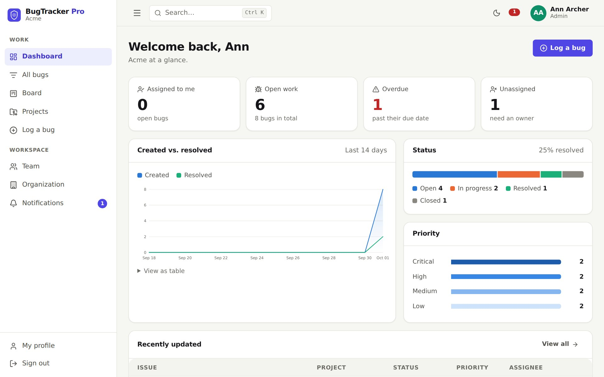

Log bugs, assign owners, move work across a board and see what's slipping — with every change reflected for your whole team the moment it happens.
Get started
A focused tracker that covers the whole loop from report to resolution, without the clutter.
Built on WebSockets: assignments, comments and status changes show up for your whole team instantly, with notifications for the things that involve you. No refreshing to see whether QA verified your fix.
Admin, manager, tester and developer roles keep everyone focused on the bugs that are theirs.
Drag bugs through Open, In Progress, Resolved and Closed, by project or just your own.
See bugs created versus resolved over time, the priority mix, what's overdue and what has no owner yet — on a dashboard that updates as your team works.
Log bugs with markdown descriptions, repro steps, screenshots and screen recordings.
Set priority and due dates, tag and link related issues, and route each bug to its owner.
Discuss in threaded comments, log time, and keep everyone in the loop automatically.
Close out bugs with a full audit trail and watch the overdue count fall.